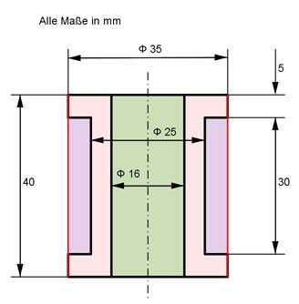

Aufgabe 107 Welche Masse m haben 100 der dargestellten Messinglagerbuchsen bei einer Dichte von 8,5 g/cm3?

V = 100 * VZylinder1 (rot) - VHohlzylinder (blau) - - VZylinder2 (grün) r1 = 35 mm/2 = 17,5 mm VZylinder1 = л * r12 * h1 = л * 17,52 * 40 mm3 = = 38 465 mm3 r2 = 25 mm/2 = 12,5 mm VHohlzylinder = = л * (r12 - r22) * h2 = = л * (17,52 - 12,52) * 30 mm3 VHohlzylinder = 14 130 mm3 r3 = 16 mm/2 = 8 mm VZylinder2 = л * r32 * h1 = = л * 82 * 40 mm3 = 8 038 mm3 V = 38 465 mm3 - 14 130 mm3 - 8 038 mm3 = = 16 297 mm3 = 16,3 cm3 m = 100 * V * р = 100 * 16,3 cm3 * 8,5 cm3 = = 13 860 g = 13,86 kg